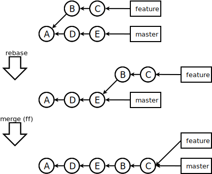

Git Introduction
A Git primer for SVN users
Summary
- What is Git?
- Git Configuration
- Git 101 Example
- Inside Git
- Fundamentals
- Branching
- Merging
- History Management
- Remote Repositories
- Submodules
What is Git?
- Distributed Version Control System
- Every developer has his/her own full copy of the repository (including all of its history)
- Very heavy focus on easy branching and merging
- Easy to use, but hard to use right
- Designed and developed by Linus Torvalds
- Used for Linux kernel development (talking about a large code base)

What is Git?
- A more common scenario: semi-centralized repository
- Every developer still has a full copy of the repository
- Developers can still share things exclusively
- The central origin repository alleviates the problem of firewalls and server software on developer machines

Why should I care?
- TFS may have a nice ALM solution, but as far as actual source control is concerned it is actually pretty lousy. (this problem persists in TFS 2012)
- SCMs are among the most important tools for developers which justifies investing some time to learn it
- It is very widely used in the open source and commercial world → chances are that you'll run into it eventually
Basic Setup
- What you will need
- Git (from msysgit.github.com - I prefer the portable version)
- A command line (we'll use PowerShell)
- OpenSSH and appropriate configuration/keys (we'll do that later)
- You could also use graphical tools, but actually understanding Git is easier if you learn it the CLI-way (and it is usually much faster)
PowerShell Detour
- If you don't know or don't use PowerShell (as a Windows developer), shame on you.*
- I could probably fill an entire talk with a PowerShell introduction, but I won't.
- Get it from Microsoft Download Center
- Part of the Windows Management Framework
- Version 3.0 was released 2012-09-04
- Get it while it's hot!
Setting up PoshGit
- Install PsGet - a PowerShell module manager
PS> (new-object Net.WebClient).DownloadString("http://psget.net/GetPsGet.ps1") | iex - Install PoshGit - provides Git integration in PowerShell
PS> install-module posh-git - That's it. This is why we use PowerShell (and PsGet) in the first place.
Setting up PoshGit
- Set Up your PowerShell profile
$env:Path = $env:Path + ";" + "C:\Path\To\Git\bin\folder" import-module PsGet import-module Posh-Git # Set up a simple prompt function prompt { $realLASTEXITCODE = $LASTEXITCODE # Reset color, which can be messed up by Enable-GitColors $Host.UI.RawUI.ForegroundColor = $GitPromptSettings.DefaultForegroundColor Write-Host($pwd) -nonewline Write-VcsStatus $global:LASTEXITCODE = $realLASTEXITCODE return "> " } Enable-GitColors
What You Get

- Tab completion of git commands
- Current branch display in prompt
- Git status in prompt
- SSH management cmdlets Start-SshAgent, Stop-SshAgent, Add-SshKey
- TortoiseGit integration into PowerShell
Git Configuration
- The Git configuration is a three level hierarchy
- System level
GitInstallDir/etc/gitconfig - User level
$env:HOME/.gitconfig - Repository level
RepoDir/.git/config
- System level
- Even though the repository level configuration applies only to a particular repository, the configuration is still local and not repository content - it will not be synchronized across clones.
- Settings in the lower levels override settings from the higher levels
Configuration Options
- You can either modify the config files directly, or ...
- ... you can use the git config command
PS> git config --get <section.name>PS> git config [--system|--global] <section.name> <value> - There are dozens of configuration options grouped in sections
- Colors
- Diff/merge tools
- Editors
- Whitespace and line break handling
- ...
Essential Configuration
- The most important configuration when working with Git is your
usersettings[user] name = "Lukas Angerer" email = lukas.angerer@comparis.ch - And after that, depending on your Git installation some color configurations are in order
[color] diff = auto status = auto branch = auto
Basic Example
- Initializing a new repository
PS> git init [--bare] [directory] - Checking Git status
PS> git status - Staging changes in the index
PS> git add [--patch] [--all] [filepattern] - Committing changes to the repository
PS> git commit [-a | --interactive] [--amend] [-m]
What was that command again?
PS> git help
The most commonly used git commands are:
add Add file contents to the index
bisect Find by binary search the change that introduced a bug
branch List, create, or delete branches
checkout Checkout a branch or paths to the working tree
...PS> git help -a
available git commands in 'git-core'
add help remote
add--interactive http-backend remote-ext
am http-fetch remote-fd
annotate http-push remote-ftp
...What was that command again?
PS> git help add
Launching default browser to display HTML ...Inside Git
- Git stores different kinds of objects: blobs, trees, commits and tags
- Every object is hashed and all references point to hashes
- All objects are stored in full, but compressed - no deltas
- You can look at the objects using the low-level command
git cat-file -p <hash>

A Commit
By inspecting this repository (i.e. the repository where this presentation was created we can take a closer look at the Git objects.
We'll start by picking a commit from the log:
PS> git log
commit 1a83e1988ae9ce177820ec37629a611e2efbac32
Author: Developer Name
Date: Thu Sep 20 13:53:54 2012 +0200
- slide on git object trees
... PS> git cat-file -p 1a83e1988ae9ce177820ec37629a611e2efbac32
tree 37e7605cc1c8c617ff92329fb7da06aa109826ab
parent 6b34c3f78b04e6047478fa8e052af9f91adcdfdf
author lord-executor 1348142034 +0200
committer lord-executor 1348142034 +0200
- slide on git object trees A Tree
A tree essentially lists the contents of a file system directory. It points to other trees (subdirectories) and blobs (files)
PS> git cat-file -p 37e7605cc1c8c617ff92329fb7da06aa109826ab
100644 blob ffea9104896cdd08a3b4b93802acada0e8f3643e .gitmodules
040000 tree 1072f131a4704078a1182dce8543f41f30708296 css
040000 tree 8d8e9a2d55857fdcf23485dda2bc7c9dedcbbf78 images
040000 tree e48d2082cf799d3b3eea3db981f36dd893ecf290 lib
100644 blob 3805543c6ecd09736f17e5b47c63d64c5996cd82 presentation.htmlPS> git cat-file -p 8d8e9a2d55857fdcf23485dda2bc7c9dedcbbf78
100644 blob 224d64730fb2419f3940c00429cd6910abf3839c git-add-help.png
100644 blob 2cd4184fdd801c1ab9c86851f3d1b9ebce1c667f object-tree.dia
100644 blob a4d6512000a13cd38bb793fa9ef847e5d6814cae object-tree.svg
100644 blob e92e46164fd13f9294201f8f46a6871a3c8928c7 posh-git.png
100644 blob 944e4583e6a6bed3b1033d53c6d3d332f142b3a7 semi-centralized-git.dia
100644 blob 628ed9c436d707feb72ccc7f5a7e9661813fed03 semi-centralized-git.svg
100644 blob f6f3c76619ea4748260287b86c9c890862475d54 three-way-git.dia
100644 blob 5394d9a1a414d142caf504a2dfbd5e79cfacf973 three-way-git.svgA Blob
Blobs contain raw file contents (binary, text, whatever). Here, we take a look at the "object-tree.dia" file:
PS> git cat-file -p 2cd4184fdd801c1ab9c86851f3d1b9ebce1c667f
<?xml version="1.0" encoding="UTF-8"?>
<dia:diagram xmlns:dia="http://www.lysator.liu.se/~alla/dia/">
<dia:diagramdata>
<dia:attribute name="background">
<dia:color val="#ffffff"/>
</dia:attribute>
<dia:attribute name="pagebreak">
<dia:color val="#000099"/>
</dia:attribute>
<dia:attribute name="paper">
<dia:composite type="paper">
<dia:attribute name="name">
<dia:string>#A4#</dia:string>
</dia:attribute>
...Branches
- You may have noticed the master in the git status command line. This is the current working branch
- master is by convention the name of the primary development branch. In SVN terminology, this would be called trunk or in Comparis terminology, this would be Development
- In Git, branches are easy to manage, cheap to create and generally a pleasure to work with
- You can keep branches locally, share them with other developers and push them to a central repository
- You can / should create branches:
- To create new features
- To try out new experimental stuff
- To do larger refactorings
- Just for the fun of it ☺
How to Branch
- Creating a new branch
PS> git branch <branch> - Switching branches
You can also directly create a new branch and switch to it withPS> git checkout <branch>PS> git checkout -b <branch> - Moving/renaming a branch
PS> git branch -m [<oldbranch>] <newbranch> - Delete a branch
if you want to discard all unmerged changes from that branchPS> git branch -d <branch>PS> git branch -D <branch>
Talking about Branches
When talking about branches it is helpful to visualize them. There is a standard notation
that is used in those circumstances: 
An example branch/commit history would then look like this:
PS> git log --graphWhy Branches are so Good
- They let you commit often and in isolation. Nobody gets in your way and you don't get in the way of others
- Branches can have a lifetime from 5 minutes to indefinitely
- Keeping feature branches separate from your master makes the history much easier to read
- Branches, just like tags are really just pointers to a commit - the so-called tip of that branch - they are simply used to navigate the content space
Referring to Commits
- Obviously, branches are a great way to refer to certain commits, but there are many different
types of references in Git:
- By the SHA1 hash - full or identifying substring
dae86e1950b1277e545cee180551750029cfe735ordae86e - By ref name
masterorheads/feature/X - By special name
HEAD(current branch head),FETCH_HEAD(current remote tracking branch head),ORIG_HEAD(base of current pending changes), ... - By revision
HEAD^1(immediate parent of HEAD),HEAD^2(grandfather of HEAD) - And many more...
- By the SHA1 hash - full or identifying substring
Merging
- Merging creates a new commit by bringing together two (or more!) branches
- Every branch can be the source or target of a merge
- To resolve the resulting (inevitalbe) conflicts, Git lets you choose one of several merge strategies - although in most cases the default is more than sufficient
- Git considers not just the two commits that need to be merged, it considers the history of commits
- (Merging is not the same as patching / cherry-picking)
Merge Scenario

- The new merge commit will be I
- F is a previous merge which is obvious due to the fact that it has two parents
- The last common ancestor of feature and master is commit E
- This means that Git has to merge G and H into master
Merging in Action
- Check out the branch you want to merge into
PS> git checkout master - Merge the changes from the source branch
PS> git merge [--no-commit] source - If there are conflicts, you can resolve them using one of the configured merge tools
or merge manually in any editorPS> git mergetool - Check in your merge commit (if this has not already happened)
PS> git commit
Changing History
- The ability to retroactively change the commit history is a controversial topic (particularly between Git and Mercurial proponents)
- Fact is, that mistakes happen
- Git relies on the judgement of the developer to make the call whether to change the history or not
- Changing history can be destructive, so do it extremely carefully...
- ... particularly if there are other people that started to work from a commit you are changing
Amending
- Did you miss a file in your latest commit? Or did you notice a bug you would rather not have in your history?
- If you haven't made your commit available to others yet (we'll get to that later), you can amend your last commit
- Make the changes that you forgot in the last commit
- Ammend the commit with
PS> git commit --amend -
By amending, you create a new commit replacing the old one
Rebasing Graph
Rebasing
- Rebasing is usually used to update a branch to the tip of an upstream branch without having to merge
- This can give you a much cleaner history for feature branches
- Git will try to apply changes introduced in the current branch to the upstream branch tip
PS> git rebase <upstream> - Rebase can also be used for branch transplants
Remote Repositories

- Every branch can have multiple remotely tracked branches associated with it
- The normal case is to have one remote tracking branch from a remote called origin
- Tracking multiple remotes can be useful for forking which is commonly used on github
- You can pull in changes from different remote repositories - even from different branches - provided that there is a common base
Pulling
- A pull pulls new information from origin into the current working branch
PS> git pull [<remote> [<remote-branch>[:<local-branch>]]] - Pulling is technically
which updates the remote tracking branch andPS> git fetch [<remote> [<remote-branch>]]
which merges the remote tracking branch into the current branchPS> git merge origin/<remote-branch> - Pulling is generally associated with a fast-forward* merge, but it is not at all unusual to have merge conflicts when pulling from a branch under heavy development
Pushing
- A push pushes changes from your current working branch(es) to origin
PS> git push [<remote> [<local-branch>[:<remote-branch>]]] - Pushing should always be a fast-forward merge since there is nobody at the receiving end that could perform a merge - pushing non-fast-forward changes will result in loss of history
- By default, push does not allow you to do non-fast-forward operations... This is where rebasing can come in handy
- Recovering from dangling commits and other accidents is possible, but requires some more low-level knowledge and commands
Pushing with Conflicts

Submodules
- Git submodules are a way of adding third party libraries to your project without having to actually copy and include all the files in your repository
- They are also very useful for maintaining large scale projects as a set of individual repositories
- They use the concept of gitlinks in combination with some configuration and the
git submodules command
- Gitlinks are simply entries in tree objects that point to a commit instead of a blob or subtree
- Gitlinks however do not contain the information on which repository the commit belongs to - that's why we need some more configuration
Managing Submodules
- Submodules are registered in two places
- The project's .gitmodules file (repository-wide configuration)
- The .git/config file (your local configuration
- Personally, I don't know of a use-case where it would be helpful to have a different local configuration, but apparently there is at least one
- Adding a submodule
PS> git submodule add [-b <branch>] <repository> <path> - If you're cloning a repository with submodules, the submodules have to be initialized first (local configuration)
PS> git submodule init
Managing Submodules
- Checking up on submodules
PS> git submodule status - Updating submodules
PS> git submodule update
Bibliography
- Torvalds, Linus et al. git Manual Pages. http://www.kernel.org/pub/software/scm/git/docs/
- Chacon, Scott. Pro Git. http://git-scm.com/book/en
- Loelinger, Jon. Version Control with Git - Powerful Techniques for Centralized and Distributed Project Management. O'Reilly Media Inc. 2009